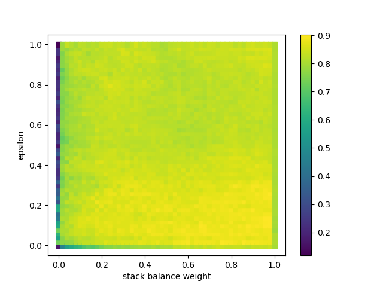
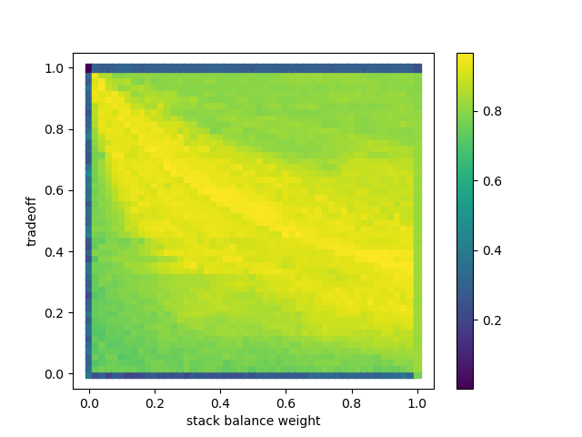
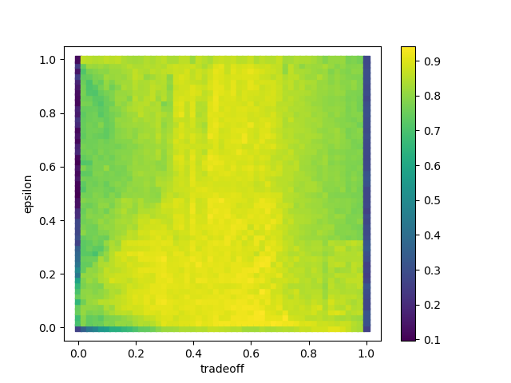
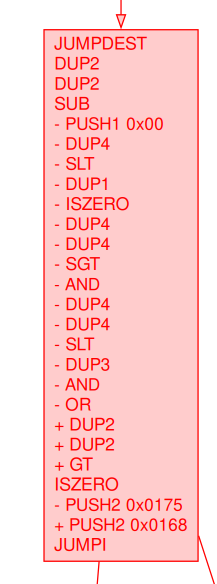
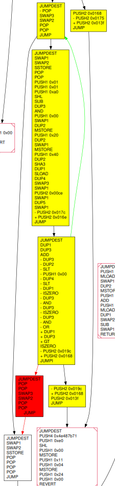
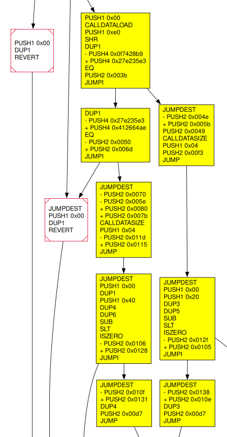

Diffing Graphs only¶
QBinDiff is able to perform graph matching, whether this graph is a Control Flow Graph (CFG), a Call Graph (CG), or something completely unrelated. We demonstrated this in our introductory blog post with the protein-protein interaction (PPI) networks of different species in bioinformatics.
In this tutorial, we will focus our attention on the CFG of EVM smart contracts.
Motivation¶
The Ethereum Virtual Machine (EVM) is a RISC stack-based architecture. It is used by Ethereum and other compatible chains to execute smart contracts, the core programs of decentralized applications on these platforms.
In addition to the lack of native support from tools such as QBinDiff, BinExport, and Quokka,
the EVM bytecode lacks an explicit structure to identify functions:
all the control flow is performed with only conditional and unconditional jumps (JUMPI, JUMP),
that read the destination address on the stack.
This design leads to particular patterns in the bytecode, for example:
the start of the bytecode contains a dispatcher, acting like a giant switch statement, that is responsible for jumping into the called external/public function;
to call internal functions and other forms of duplicated code, the caller pushes a return address onto the stack before executing a jump instruction.
However, several tools let you recover the CFG of the smart contract (some even detect functions with varying degrees of success). From this information alone, this tutorial will guide you with diffing an example smart contract.
How to diff¶
In this tutorial, we will diff two versions of an example smart contract. One allows its user’s balance to go negative but not the other.
|
|
|---|---|
// SPDX-License-Identifier: MIT
pragma solidity 0.8.25;
contract SimpleToken {
mapping(address => int) public balances;
constructor() {
balances[msg.sender] += 1000e18;
}
function sendToken(address _recipient, int _amount) public {
balances[msg.sender] -= _amount;
balances[_recipient] += _amount;
}
}
|
// SPDX-License-Identifier: MIT
pragma solidity 0.8.25;
contract SimpleToken {
mapping(address => uint) public balances;
constructor() {
balances[msg.sender] += 1000e18;
}
function sendToken(address _recipient, uint _amount) public {
balances[msg.sender] -= _amount;
balances[_recipient] += _amount;
}
}
|
608060405234801561001057600080fd5b50600436106100365760003560
e01c80630f7428b91461003b57806327e235e314610050575b600080fd5b
61004e6100493660046100f3565b610082565b005b61007061005e366004
61011d565b60006020819052908152604090205481565b60405190815260
200160405180910390f35b33600090815260208190526040812080548392
906100a1908490610155565b90915550506001600160a01b038216600090
815260208190526040812080548392906100ce90849061017c565b909155
50505050565b80356001600160a01b03811681146100ee57600080fd5b91
9050565b6000806040838503121561010657600080fd5b61010f836100d7
565b946020939093013593505050565b60006020828403121561012f5760
0080fd5b610138826100d7565b9392505050565b634e487b7160e01b6000
52601160045260246000fd5b818103600083128015838313168383128216
17156101755761017561013f565b5092915050565b808201828112600083
128015821682158216171561019c5761019c61013f565b50509291505056
fea264697066735822122078995ea6ebd8bd5d1333cde4da1d4ade3eee62
af048e42232dbc3ed6cd682aba64736f6c63430008190033
|
608060405234801561001057600080fd5b50600436106100365760003560
e01c806327e235e31461003b578063412664ae1461006d575b600080fd5b
61005b6100493660046100f3565b60006020819052908152604090205481
565b60405190815260200160405180910390f35b61008061007b36600461
0115565b610082565b005b33600090815260208190526040812080548392
906100a1908490610155565b90915550506001600160a01b038216600090
815260208190526040812080548392906100ce90849061016e565b909155
50505050565b80356001600160a01b03811681146100ee57600080fd5b91
9050565b60006020828403121561010557600080fd5b61010e826100d756
5b9392505050565b6000806040838503121561012857600080fd5b610131
836100d7565b946020939093013593505050565b634e487b7160e01b6000
52601160045260246000fd5b818103818111156101685761016861013f56
5b92915050565b808201808211156101685761016861013f56fea2646970
66735822122024ea090b39258ab97fbe93f3646eb22d1d2cc2aedc4b74e1
c3861562ad940d0364736f6c63430008190033
|
To this end, we will use QBinDiff’s DiGraphDiffer to compare their CFG.
Generate the graphs¶
The first step is to recover the CFG from the bytecode of the smart contracts. While not trivial, this has been solved by several tools already. We recommend EtherSolve (java) or vandal (python).
java -jar EtherSolve.jar -r -j vulnerable.evm
The command above generates a file named Analysis_<datetime>.json.
In this file, the CFG can be found under the runtimeCfg field.
Note that edges are stored under runtimeCfg.successors (and sometimes have duplicate entries).
QBinDiff’s differ expects networkx.DiGraph as inputs, so we will need to adapt the data a little bit:
def process_ethersolve(analysis: dict[str, Any]) -> networkx.DiGraph:
# Filter the desired attributes and set the node ID as the basic block's offset
nodes = [
{
"id": n["offset"],
"length": n["length"],
"type": n["type"],
"stack_balance": n["stackBalance"],
"bytecode": n["bytecodeHex"],
"opcodes": n["parsedOpcodes"],
} for n in analysis["runtimeCfg"]["nodes"]
]
# Generate an edge for each successor of each node
links = [
[{"source": e["from"], "target": t} for t in e["to"]]
for e in analysis["runtimeCfg"]["successors"]
]
# Flatten the list
links = [item for sublist in links for item in sublist]
# Create the networkx.DiGraph
nx_node_link = {"directed": True, "multigraph": False, "nodes": nodes, "links": links}
return networkx.node_link_graph(nx_node_link)
(optional) Write heuristics¶
When matching nodes, we can help the differ by setting an initial similarity score between each pair of nodes. These scores are gathered in the similarity matrix, initialized to all 1, meaning every node is initially believed to be similar to all nodes.
If you have access to some heuristic for similarity between nodes, you can add a prepass that will be executed before matching nodes to alter the similarity matrix.
For example, we have access to the stack balance of each basic block. This value indicates how many words the basic block pushes or pops from the stack. Intuitively, similar blocks should have the same stack balance.
You can find more information here on how to create a prepass.
In this example, we first arrange nodes by stack balance in each graph, then reduce the similarity of nodes that do not share the same stack balance.
Note that the nodes’ IDs are their offset, and do not correspond to the row or column in the similarity matrix.
The correspondance is given by the primary_n2i and secondary_n2i mappings.
def prepass_stack_balance(
sim_matrix: SimMatrix,
primary: qbindiff.GenericGraph,
secondary: qbindiff.GenericGraph,
primary_n2i: dict[int, int],
secondary_n2i: dict[int, int],
**kwargs,
) -> None:
# Arrange nodes indices by stack balance
## Primary node indices by stack balance
primary_index: dict[int, list[int]] = {}
## Secondary node indices by stack balance
secondary_index: dict[int, list[int]] = {}
## Populate primary_index and secondary_index
for graph, n2i, index in (
(primary, primary_n2i, primary_index),
(secondary, secondary_n2i, secondary_index),
):
for node_id in graph.nodes():
node = graph.nodes[node_id]
balance = node["stack_balance"]
if balance not in index:
index[balance] = []
index[balance].append(n2i[node_id])
# Reduce the similarity of nodes that do not share the same stack balance by 60%
for primary_balance, primary_indices in primary_index.items():
for secondary_balance, secondary_indices in secondary_index.items():
if primary_balance == secondary_balance:
continue
for i in primary_indices:
sim_matrix[i, secondary_indices] *= 0.4
Perform the match¶
Once you have the CFG in a networkx.DiGraph object,
and have optionally written some prepasses, performing the mapping is simple:
differ = qbindiff.DiGraphDiffer(
primary_cfg,
secondary_cfg,
sparsity_ratio=0,
tradeoff=0.5,
epsilon=0.1,
)
differ.register_prepass(prepass_stack_balance) # optional
mapping = differ.compute_matching()
You can experiment with the tradeoff and epsilon values, depending on the nature of the diffing performed. As general guidelines:
tradeoffgives more weight to the topology when close to 0, and more weight to the similarity when close to 1. It should be set strictly between 0 and 1. The better your heuristics, the higher its value.epsiloncontrols the convergence speed. It should not be set to 0, and be as close to 1 as you can afford to wait. For this simple example, a conservative low value is not an issue.you should adjust how much your prepasses affect the similarity matrix, depending on the quality of your heuristics.
For this example, we performed an exhaustive search of these parameters,
when compared to a ground truth matching.
In these maps, epsilon and tradeoff correspond to the above parameters,
while stack balance weight controls how much the stack balance prepass impacts the similarity matrix.
|  |  |  |
Process the result¶
Now that you have a mapping between nodes of the primary and secondary graphs, you can process it however you like, for example to compute similarity score.
Here we show a visualization of the resulting diff, revealing interesting aspects of the modification:
From signed to unsigned operations |
CFG rewiring |
Dispatcher update |
|---|---|---|
|  |  |  |